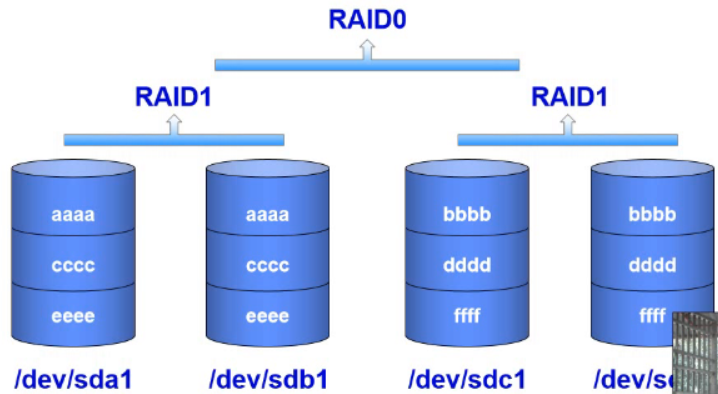

raid
概述；
廉价冗余磁盘阵列
raid 磁盘阵列（独立冗余磁盘阵列）
硬raid（推荐）： 会有一个raid卡，用来控制这个raid，是正raid的大脑 容错功能 专门有数据处理的芯片 软raid： 通过软件来实现raid控制功能，不需要需要硬件。 需要使用电脑的cpu里来处理数据 kernel里有这个软件--》linux自带不需要安装磁盘阵列（Redundant Arrays of Independent Drives，RAID），有“独立磁盘构成的具有冗余能力的阵列”之意。
磁盘阵列是由很多块独立的磁盘，组合成一个容量巨大的磁盘组，利用个别磁盘提供数据所产生加成效果提升整个磁盘系统效能。利用这项技术，将数据切割成许多区段，分别存放在各个硬盘上。磁盘会坏，坏了意味着数据丢失
软件raid：只能通过Linux系统本身来查看
cat /proc/mdstat
可以看到raid级别，状态等信息。
硬件raid： 最佳的办法是通过已安装的raid厂商的管理工具来查看，有cmdline，也有图形界面。如Adaptec公司的硬件卡就可以通过下面的命令进行查看：- /usr/dpt/raidutil -L all
如何知道磁盘坏了？
1.看磁盘的灯是否亮--》需要人去现场看--》很傻 2.查看raid的数据，里面有显示那些是好的，那些是坏的。--》监控脚本或者程序
常见RAID等级
RAID0、RAID1、RAID5、RAID6、RAID10、RAID01
功能：1.数据冗余 2.容错 3.存取数据速度快raid0：读写速度快，但是没有容错功能。2块以上磁盘组成。磁盘利用率100% –》条带卷
raid1：镜像卷：2块磁盘组成，有容错功能。磁盘利用率50%
raid5： 背后的原理是 分布校验 + 条带 ：可以容错，至少3块磁盘，最多坏一块。磁盘利用率： (n-1)/nraid6： 背后的原理是 分布校验 +分布校验+ 条带 ：可以容错，至少4块磁盘，最多坏2块。
磁盘利用率： (n-2)/nraid 10:镜像+条带
有容错功能，可以坏2块。磁盘利用率50%
- 
raid什么时候配置
raid的配置是在安装系统之前就配置好了的
裸机–》系统做raid1，数据磁盘做raid5 –》安装系统—》存放数据
能自己购买服务器的公司—》有钱的行为只有真实的服务器需要做raid
购买云服务器的公司不做raid
云服务产商会提供数据不丢失的保障
99.9999%如何配置硬raid？
答案：打客服电话、百度、官方网站
LVM：逻辑卷管理
概述
扩容的流程：
pv—》vg—》lv
lv 索要空间步骤：lv –》vg—》pvcentos7里默认就是采用的lvm技术，在安装系统的时候
扩容后不需要进行格式化
告诉linux系统重新识别挂载的分区的大小
xfs_growfs —》xfs
resize2fs —》ext3/ext4
总结：
raid–》磁盘阵列–》raid0 1 5 6 10 –>容错、速度快
lvm–》逻辑卷—》动态扩容—》PV、VG、LV
- 先做raid—》然后使用lvm
问题
练习1：
阿里哥哥公司服务器：
文件服务器：存放公司内部资料和视频
/file —>3块磁盘—》450G
扩容—》2块磁盘—》750G —>总容量达到750G推荐步骤：
PV —》 VG —》 LV –>格式化—>挂载–》使用文件系统1
2
3
4
5
6
7
8
9
10
11
12
13
14
15
16
17
18
19
20
21
22
23
24
25
26
27
28
29
30
31
32
33
34
35
36
37
38
39
40
41
42
43
44
45
46
47
48
49
50
51
52
53
54
55
56
57
58
59
60
61
62
63
64
65
66
67
68
69
70
71
72
73
74
75
76
77
78
79
80
81
82
83
84
85
86
871.创建pv（物理卷）
[root@localhost ~]# yum provides pvcreate
yum install lvm2
[root@localhost ~]# pvcreate /dev/sdb
Physical volume "/dev/sdb" successfully created.
[root@localhost ~]# pvcreate /dev/sdc
Physical volume "/dev/sdc" successfully created.
[root@localhost ~]# pvcreate /dev/sdd
Physical volume "/dev/sdd" successfully created.
[root@localhost ~]#pvcreate /dev/sd[bcd] 等同于上面3条命令
2.创建VG（卷组）
[root@localhost ~]# vgcreate alimeimei /dev/sd[bcd]
Volume group "alimeimei" successfully created
[root@localhost ~]#
allocate 分配
[root@localhost ~]# vgscan 扫描vg
Reading volume groups from cache.
Found volume group "alimeimei" using metadata type lvm2
[root@localhost ~]#
[root@localhost ~]# vgdisplay alimeimei 查看vg里的alimeimei卷组的信息
--- Volume group ---
VG Name alimeimei
System ID
Format lvm2
Metadata Areas 3
Metadata Sequence No 1
VG Access read/write
VG Status resizable
MAX LV 0
Cur LV 0
Open LV 0
Max PV 0
Cur PV 3
Act PV 3
VG Size <299.99 GiB
PE Size 4.00 MiB
Total PE 76797
Alloc PE / Size 0 / 0
Free PE / Size 76797 / <299.99 GiB
VG UUID LYOhZc-FWAc-ZEO9-epjJ-FOVS-BJt2-N5ZNjs
[root@localhost ~]#
3.创建LV
[root@localhost ~]# lvcreate -L 299G -n file_store alimeimei
Logical volume "file_store" created.
[root@localhost ~]#
-L 指定大小 size
-n 指定LV的名字 name
[root@localhost ~]# lvscan
ACTIVE '/dev/alimeimei/file_store' [299.00 GiB] inherit
[root@localhost ~]#
[root@localhost ~]# mkfs.xfs /dev/alimeimei/file_store
meta-data=/dev/alimeimei/file_store isize=512 agcount=4, agsize=19595264 blks
= sectsz=512 attr=2, projid32bit=1
= crc=1 finobt=0, sparse=0
data = bsize=4096 blocks=78381056, imaxpct=25
= sunit=0 swidth=0 blks
naming =version 2 bsize=4096 ascii-ci=0 ftype=1
log =internal log bsize=4096 blocks=38272, version=2
= sectsz=512 sunit=0 blks, lazy-count=1
realtime =none extsz=4096 blocks=0, rtextents=0
[root@localhost ~]#
一个LV就相当于标准磁盘里的一个分区
4.挂载使用
[root@localhost ~]# mkdir /file 新建挂载点
[root@localhost ~]# mount /dev/alimeimei/file_store /file 挂载LV file_store到/file
[root@localhost ~]#
[root@localhost ~]# df -Th
文件系统 类型 容量 已用 可用 已用% 挂载点
/dev/sda3 xfs 80G 1.6G 79G 2% /
devtmpfs devtmpfs 481M 0 481M 0% /dev
tmpfs tmpfs 492M 0 492M 0% /dev/shm
tmpfs tmpfs 492M 7.6M 485M 2% /run
tmpfs tmpfs 492M 0 492M 0% /sys/fs/cgroup
/dev/sda2 xfs 20G 33M 20G 1% /data
/dev/sda1 xfs 497M 117M 381M 24% /boot
tmpfs tmpfs 99M 0 99M 0% /run/user/0
/dev/mapper/alimeimei-file_store xfs 299G 33M 299G 1% /file
[root@localhost ~]#
5.开机自动挂载
vim /etc/fstab
/dev/alimeimei/file_store /file xfs defaults 0 0